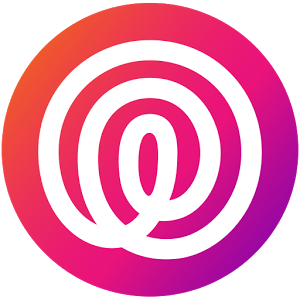
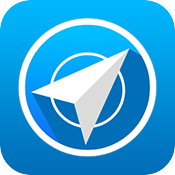
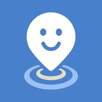

Round Icons
Graphic Design
Пътуване и навигация
Знаем, че обичаш да пътуваш. Всеки обича. Но всички пътувания изискват обикаляне по улиците и често водят до лутане в търсене на забележителност. Но приложенията, които сме подбрали не ви помагат само в такива ситуации- дори ако не пътувате често и живеете в голям град, те също ви биха били от голяма полза, когато трябва да бързо да се придвижите във вашия град или да се посетите приятели и роднини в друго населено място.
Софбус 24 (Android)
От Zdravko Nestorov
Софбус 24 предлага възможност за предоставяне на подробна информация на пътниците, свързана с използването на градски транспорт, разписания, маршрути и др. Информацията за пристигането на превозните средства работи в реално време и би трябвало да е максимално близка до реалността.
Цена: Безплатно
Изтегли приложението от Google Play Store
Харесай Добави в любими
The Traveler (Android)
От Frog Baby Apps LLC
Приложението, което ще обедини всичко нужно около вашето незабравимо пътешествие на едно място. Traveler позволява да добавяте и съхранявате снимки, видеоклипове, аудио бележки и записи. Към всяка снимка може да добавяте информация, описание, геолокация. Приложението поддържа много интересната опция Path – с нея записвате пътеки и маршрути, по които сте минали. След това може да ги споделяте или просто да се ориентирате по тях, за да се върнете до отправната ви точка, ако случайно се загубите в непознат град. За Samsung Galaxy Note устройствата, Traveler позволява да нарисувате свои пътища, които чрез стилуса S Pen да скицирате с най-важните обекти по маршрута. За ваше улеснение приложението работи в офлайн режим (без функциите, свързани с геолокация), а за да е всичко на едно място, се свързва с Facebook или Google профил. Traveler предлага и widget за началния екран, за да добавяте още по-лесно данни.
Цена: Безплатно
Изтегли приложението от Google Play Store
Харесай Добави в любими
Taxi Bulgaria (Android)
От stenik
Ежедневието е натоварено, прибрали сте се вкъщи или сте на гости в друг град за празниците, но не можете да смогнете да се видите с всички, затова прескачате от такси в такси и се оглеждате по улиците да мине някоя жълта кола. Taxi Bulgaria ви спестява нерви и време, тъй като разполага с телефоните на 51 таксиметрови компании в 17 града с възможност за добавяне на нови, ако любимата ви компания я няма. Разполагате с бутон за бързо набиране, информация за тарифите, оцeняване и възможност за сортиране по различни критерии.
Цена: Безплатно
Изтегли приложението от Google Play Store
Харесай Добави в любими

Семеен локализaтор (Android, iOS)
От Life360
Семейният локализaтор от Life360 е най-точният начин да споделяте своето местоположение със семейството си. Използвайки най-новите технологии за GPS проследяване, семейният локализaтор ви позволява да създавате групи, наречени "кръгове", на семейството и приятелите си, за да можете да:
- Намирате членовете на семейството си и приятелите си на картата
- Ще знаете, че вашето семейство е в безопасност и кога се нуждае от помощ
- Наличната чат функция позволява да общувате пряко с всеки един от кръговете ви
- Ще бъдете известени, когато член на ваш кръг достигне определена дестинация
- Ще можете да проследите откраднат или изгубен телефон
Цена: Безплатно (Предлага покупки в приложението)
Изтегли приложението от Google Store, App Store
Харесай Добави в любими

LIMA - Мобилно приложение на АПИ (Android, iOS)
От Road Infrastructure Agency
Мобилното приложение на АПИ е част от системата LIMA, която е напълно интегрирана и свързва Агенция “Пътна инфраструктура”, всички пътни управления в стараната и нас, потребителите, в едно място. Използвайки мобилното приложение, вие имате възможност да сте информирани в реално време за всичко случващо се по републиканската пътна мрежа в страната, както и да допринесете за подобряването на пътната инфраструктура чрез вашата гражданска активност. Генерирането на информация в реално време е възможно благодарение на над 60 оператори от АПИ и пътните управления в цялата страна, които ежеминутно обновяват информацията. Мобилното приложение на АПИ е първото приложение в света, в което пътна агенция интегрира функционалност за автоматична връзка със 112 при засечен инцидент от самото приложение. Когато "Режим Безопасност" е включен, Мобилното приложение на АПИ може да засече евентуален инцидент, докато карате или се возите в автомобил по републиканската пътна мрежа. Мобилното приложение на АПИ ви дава възможност да регистрирате всяка нередност по пътното платно на републиканската пътна мрежа, като ви обещава всеки сигнал да бъде обработен и да получите обратна връзка през приложението. Чрез мобилното приложение на АПИ към националната система за информираност LIMA можете да:
- следите в реално време актуалната пътна обстановка по извънградските пътища на България;
- подавате сигнали за нередности по пътната мрежа, които сигнали се изпращат автоматично към Агенция "Пътна инфраструктура" и местните управления, а вие получавате обратна връзка за тяхното развитие и решаване;
- изберете маршрут, съобразен с актуалната пътна обстановка, като затворени пътища, ремонти и др.;
- имате автоматична връзка с АПИ и екипите за спешна помощ в случай на инцидент с вашата кола или с колата, в която се движите.
Цена: Безплатно
Изтегли приложението от Google Play Store, App Store
Харесай Добави в любими
GPS Tracking 4D (Windows)
От MELON JSC
Дали детето e вече на училище? Дали съпругът ми е наблизо за чаша чай? Как ли се справя брат ми с планинския преход? Живеем във време, когато нашите телефони знаят толкова много за нас – къде се намираме, кои са приятелите ни, какви са плановете ни. Споделена, тази информация гарантира спокойствие на хората, които са скъпи за нас – семейство, приятели и т.н. Решението: GPS Tracking - модерната връзка с вашето семейство и приятели. Чрез приложението местоположението ви се споделя с избрани от вас хора, когато изберете и както прецените. Опции:
- Geo-fencing нотификации - известяване, когато детето ви влиза/напуска училище и др.
- Автоматично обновяване на местоположение - вашето и това на вашите контакти
- Уведомяване за местоположение на ваш контакт при заявка
- Настройките за достъп - кой и кога да ви вижда онлайн
- Указания до местоположението на избран приятел
- Live tile опция
- Push нотификации
- Възможности за текст към говор и гласово търсене
- Рейтване и коментиране
- Приложението е достъпно на английски, немски, френски, италиански, испански, португалски, руски и български език.
Цена: Безплатно
Изтегли приложението от Windows Store
Харесай Добави в любими

LINE HERE (Android, iOS)
От LINE Corporation
Проверете къде са вашето семейство и приятели, когато и където искате. С LINE HERE ще знаете къде са членовете на семейството и приятелите ви по-лесно от всякога! Ако не искате да споделяте местоположението си през цялото време, можете да използвате таймера за споделяне на местоположението ви, с който да зададете определен период от време. С таймера споделянето на местоположението ви спира автоматично, когато часовникът удари нула.
Цена: Безплатно
Изтегли приложението от Google Play Store, App Store
Харесай Добави в любими
Sky Map (Android)
От Sky Map Devs
Лежите през нощта на плажа или на къмпинг, гледате звездите и размишлявате. Вече няма нужда да се чудите какви са тези цветни точки, кои от тях са звезди и какви съзвездияобразуват. Google има информация за всички небесни тела и сега те са обединени в проекта Google Sky. За мобилни устройства небесната картина е достъпна чрез приложението Sky Map, засега само за Android. То ви локализира посредством вградения GPS на смартфона, а след като насочите устрой ството към небето, на дисплея ви излизат всички звезди, съзвездия, планети. Ако искате да откриете конкретен небесен обект, го въвеждате в търсачката и кръгче ви насочва към обекта на принципа студенотопло. Въпреки че звучи страхотно, невинаги локализирането е най-доброто и понякога трябва да напасвате небесната карта спрямо обектите, които виждате на живо. Но въпреки този минус Google Sky Map е едновременно забавна и образователна.